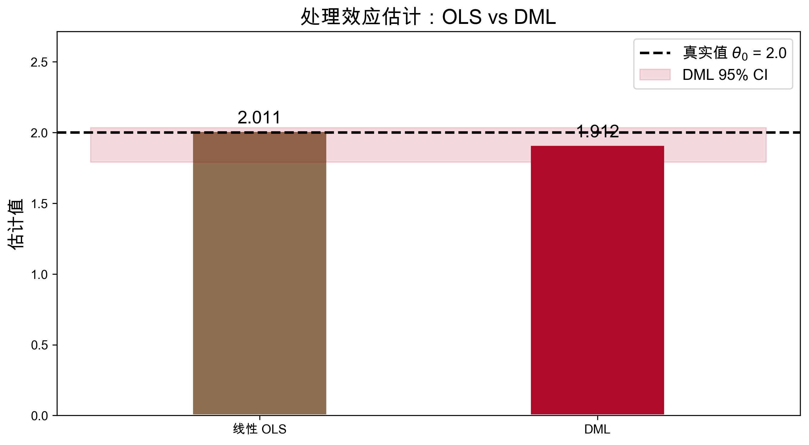
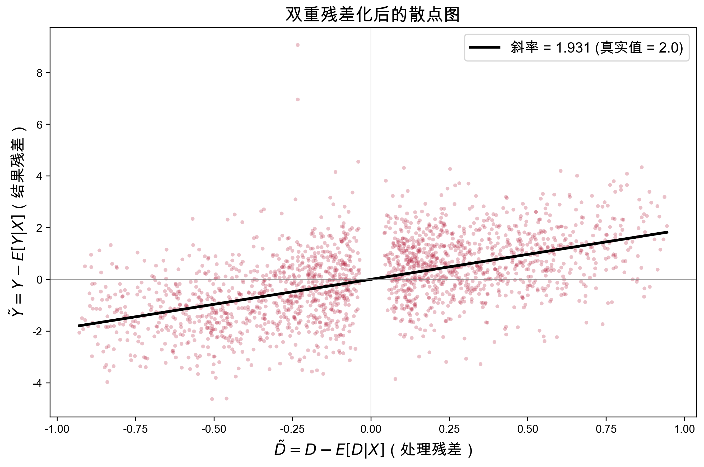

真实处理效应: theta_0 = 2.000
OLS（线性控制）: hat_theta = 2.011
偏差: +0.011
OLS 存在设定偏误：
g_0(X) 包含 X^2 和 sin(X) 等非线性项，
线性控制无法完全消除混杂第十一讲：双重机器学习——高维控制与去偏估计
中国人民大学商学院
2026-06-02
因果森林与异质性分析
本节课核心问题
从 CATE 到 ATE：另一类问题
因果森林回答的是“效应对谁更大？”
但更基本的问题是：当需要控制的混杂变量 很多 时，如何准确估计 平均处理效应？
典型场景
设定：估计处理 D 对结果 Y 的因果效应 \theta_0，同时需要控制大量混杂变量 X
Y = \theta_0 D + g_0(X) + U
挑战
| 方法 | 优势 | 用于因果推断的问题 |
|---|---|---|
| 传统 OLS | \sqrt{n} 一致性，有效推断 | 无法处理 p \gg n，非线性混杂 |
| 机器学习 | 灵活建模，高维预测 | 正则化导致偏差，无有效推断 |
核心思想
能否 结合两者？用 ML 灵活地控制高维混杂，同时保留传统方法的 \sqrt{n} 推断能力？
这正是 双重机器学习（Double/Debiased Machine Learning）的目标。
天真的两步策略
这行不通
Partially Linear Model (Robinson, 1988)
Y_i = \theta_0 D_i + g_0(X_i) + U_i, \quad E[U_i | D_i, X_i] = 0
D_i = m_0(X_i) + V_i, \quad E[V_i | X_i] = 0
Frisch-Waugh-Lovell 定理
在线性回归中，\theta_0 等价于对残差的回归：
\tilde{Y}_i = \theta_0 \tilde{D}_i + \tilde{U}_i
其中 \tilde{Y} = Y - \text{proj}_X Y，\tilde{D} = D - \text{proj}_X D
非参数推广：Robinson (1988) 的关键洞见
Y_i - E[Y_i|X_i] = \theta_0 (D_i - E[D_i|X_i]) + U_i
如果我们知道 E[Y|X] 和 E[D|X]，只需回归残差就能恢复 \theta_0！
问题：E[Y|X] 和 E[D|X] 未知，需要用 ML 估计。
真实处理效应: theta_0 = 2.000
OLS（线性控制）: hat_theta = 2.011
偏差: +0.011
OLS 存在设定偏误：
g_0(X) 包含 X^2 和 sin(X) 等非线性项，
线性控制无法完全消除混杂来源一：正则化偏差
ML 模型（如 LASSO）为避免过拟合而引入正则化，使 \hat{g}(X) 有系统性偏差
\hat{g}(X) = g_0(X) + \Delta_g(X)
来源二：过拟合偏差
用全部数据训练 ML 又在同一数据上预测 → \hat{g}(X_i) 与 U_i 不独立
关键问题
当 \Delta_g 与 D 相关时（几乎必然），\hat{\theta} 的偏差为 O(n^{-1/2}) 量级，无法忽略
定义 得分函数（矩条件）\psi(W; \theta, \eta) = 0，其中 \eta = (\ell_0, m_0) 是讨厌参数
Neyman 正交性
如果得分函数满足
\frac{\partial}{\partial \eta} E[\psi(W; \theta_0, \eta)] \Big|_{\eta = \eta_0} = 0
则 \hat{\eta} 的 一阶估计误差 不影响 \hat{\theta} 的一致性
直觉：正交条件确保 \hat{\theta} 对讨厌参数的估计误差“不敏感”
标准矩条件（非正交）
\psi_{naive} = (Y - \ell(X) - \theta D) \cdot D
→ 对 \hat{\ell} 的误差敏感，因为 D 与 X 相关
Neyman 正交矩条件
\psi_{DML} = \big(Y - \ell(X) - \theta(D - m(X))\big) \cdot (D - m(X))
双重残差化
类比：分离信号与背景
X 是“共同背景噪声”，同时影响 Y 和 D。DML 的双重残差化就是：
只做一重（只残差化 Y）会怎样？
为什么不能用全样本训练？
样本内 ML 预测过拟合：\hat{g}(X_i) 会01c记住01d个体 U_i，导致残差被扭曲
交叉拟合策略
将数据随机分成 K 折（通常 K = 5）。对每一折 k：
\tilde{Y}_i = Y_i - \hat{\ell}_{-k}(X_i), \quad \tilde{D}_i = D_i - \hat{m}_{-k}(X_i), \quad i \in I_k
输入：数据 \{(Y_i, D_i, X_i)\}_{i=1}^n，ML 学习器，折数 K
将样本随机分成 K 折：I_1, I_2, \ldots, I_K
对每折 k = 1, \ldots, K：
DML 估计量：
\hat{\theta}_{DML} = \frac{\displaystyle\sum_{k=1}^K \sum_{i \in I_k} \tilde{D}_i \tilde{Y}_i}{\displaystyle\sum_{k=1}^K \sum_{i \in I_k} \tilde{D}_i^2}
定理 (Chernozhukov et al., 2018)
在适当条件下，DML 估计量满足：
\sqrt{n}(\hat{\theta}_{DML} - \theta_0) \xrightarrow{d} N(0, \sigma^2)
其中 \sigma^2 = \frac{E[\tilde{D}^2 U^2]}{(E[\tilde{D}^2])^2}
关键条件
例子
若 \hat{\ell} 和 \hat{m} 各以 n^{-1/4} 的速率收敛，乘积率为 n^{-1/2}，满足条件。随机森林、LASSO、神经网络等常见 ML 方法通常满足此条件。
from econml.dml import LinearDML
dml = LinearDML(
model_y=RandomForestRegressor(
n_estimators=200, max_depth=5, random_state=42),
model_t=RandomForestRegressor(
n_estimators=200, max_depth=5, random_state=42),
cv=5, random_state=42
)
dml.fit(Y, D, W=X)
theta_dml = float(dml.const_marginal_effect())
ci = dml.const_marginal_effect_interval(alpha=0.05)
ci_lower, ci_upper = float(ci[0]), float(ci[1])
print(f"DML 估计值: {theta_dml:.4f}")
print(f"95% 置信区间: [{ci_lower:.4f}, {ci_upper:.4f}]")
print(f"真实值 theta_0 = {theta_0} 在 CI 内: "
f"{'Yes' if ci_lower <= theta_0 <= ci_upper else 'No'}")DML 估计值: 1.9124
95% 置信区间: [1.7908, 2.0341]
真实值 theta_0 = 2.0 在 CI 内: Yes
# Step 1: 残差化 Y（交叉拟合）
Y_hat = cross_val_predict(RandomForestRegressor(
n_estimators=200, max_depth=5, random_state=42),
X, Y, cv=5)
Y_tilde = Y - Y_hat
# Step 2: 残差化 D（交叉拟合）
D_hat = cross_val_predict(RandomForestRegressor(
n_estimators=200, max_depth=5, random_state=42),
X, D, cv=5)
D_tilde = D - D_hat
# Step 3: OLS 回归残差
theta_manual = np.sum(D_tilde * Y_tilde) / np.sum(D_tilde**2)
print(f"手动 DML 估计: {theta_manual:.4f}")
print(f"econml DML: {theta_dml:.4f}")
print(f"真实值: {theta_0:.4f}")手动 DML 估计: 1.9305
econml DML: 1.9124
真实值: 2.0000
提示
Python
econml：LinearDML, DML, CausalForestDMLdoubleml：DoubleMLPLR, DoubleMLIRM（推荐）scikit-learn：交叉验证、ML 学习器提示
R
DoubleML：基于 mlr3 生态系统grf：forest-based DML（内置交叉拟合）hdm：高维稀疏模型，Double Selection第十二讲：前沿专题——因果推断与 AI
核心展望
从传统统计方法到现代机器学习框架，我们已经拥有了完整的工具箱。因果推断与人工智能的融合正在重塑社会科学研究和商业决策。最重要的是学会在正确的场景选择正确的工具。
Chernozhukov, V., Chetverikov, D., Demirer, M., Duflo, E., Hansen, C., Newey, W., & Robins, J. (2018). Double/Debiased Machine Learning for Treatment and Structural Parameters. The Econometrics Journal, 21(1), C1–C68.
Robinson, P.M. (1988). Root-N-Consistent Semiparametric Regression. Econometrica, 56(4), 931–954.
Bach, P., Chernozhukov, V., Kurz, M., & Spindler, M. (2022). DoubleML: An Object-Oriented Implementation of Double Machine Learning in Python. Journal of Machine Learning Research, 23(53), 1–6.
Chernozhukov, V., Hansen, C., Kallus, N., Spindler, M., & Syrgkanis, V. (2024). Applied Causal Inference Powered by ML and AI. causalml-book.org
Athey, S., & Imbens, G.W. (2019). Machine Learning Methods That Economists Should Know About. Annual Review of Economics, 11, 685–725.
Angrist, J.D. & Pischke, J.S. (2009). Mostly Harmless Econometrics. Princeton University Press.